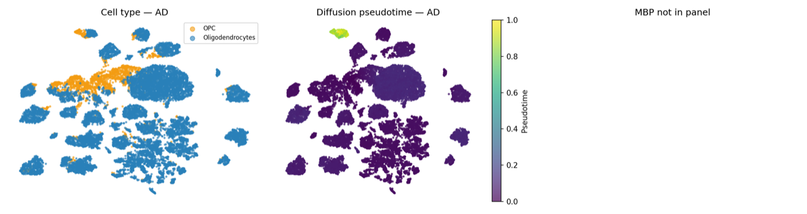

By scale
Molecules → disease
Everything I have learned, arranged by the level of the nervous system it belongs to, not by the course it came from. Each line names its source.
Molecules
How charged ions and signalling molecules create the raw material of neural signals.
Set the ion's battery
Change the concentrations and watch the equilibrium potential move. Nernst equation at 37 °C.
Describe ionic channels as gatekeepers of the membrane potential.
Treat ionic gradients as batteries and ion channels as stochastic pores, each ion with its own equilibrium potential.
Write gate kinetics for potassium activation and sodium activation with inactivation.
Model synaptic conductance from release probability and channel-opening kinetics.
Explain the resting potential and synaptic transmission step by step.
Describe AMPA and NMDA receptors and how drugs interfere with transmission.
Describe the blood-brain barrier as both protection and delivery problem.
Fundamentals of bioelectricity
Basics of synapses
The role of neuromodulation in the firing of synapses
Neurotransmitters, neurophysiology and decision networks
Textbook chapters for this level
Neurons
How one cell integrates its input, fires, and carries information.
Hodgkin-Huxley spike
Solved live with the classic squid-axon parameters. Compare how quickly m, h and n respond.
Recover a filter from spikes
A synthetic neuron with a known filter is driven by white noise. More data brings the spike-triggered average closer to the truth.
Explain how V1 receptive fields can be built from LGN input in the Hubel and Wiesel model.
Trace the action potential, its propagation along the axon, and the role of myelin.
Read raster plots and tuning curves, and say where the tuning-curve picture stops working.
Build the linear-nonlinear response model and explain why a linear filter alone is not enough.
Recover a neuron's feature from data with the spike-triggered average, and explain why white noise is the right stimulus.
Extend to several features with PCA and maximally informative dimensions.
Derive the Poisson model from coin flips, test it against data, and move to generalized linear models.
Explain where the retina must place its threshold to detect single photons, and the role of the prior.
Define entropy, noise entropy and mutual information, including their limiting cases.
Estimate information from spike patterns and recognise undersampling bias.
Compute information per single spike and apply it to place fields.
Derive the passive membrane equation from an RC circuit.
Assemble the Hodgkin-Huxley equations and read a spike as a separation of timescales.
Reduce the neuron to integrate-and-fire, theta and two-variable models, and analyse them in the phase plane.
Use the cable equation and compartmental models to reason about dendritic computation.
Add a synapse to the membrane equation as one more conductance branch.
Identify the parts of a neuron and the roles of glia, including myelin.
Explain excitation, inhibition and summation, and what different electrodes record.
Neural communication and embodied emotion
The importance of resting potential
The properties of passive membranes
Action potentials, their currents, and their role in the nervous system
Textbook chapters for this level
Networks
What groups of connected neurons compute, and how their connections change.
Hebb explodes, Oja converges
Both rules find the same direction in correlated input. Only Oja's keeps the weight finite.
One eigenvalue, three regimes
A single recurrent mode. Below 1 it amplifies, at 1 it integrates, above 1 it explodes.
Explain the synapse doctrine, Hebbian learning and spike-timing dependent plasticity.
Model centre-surround receptive fields as spatial filters using a difference of Gaussians.
Decode direction with population vectors in cricket cercal cells and motor cortex, and say why that is not enough.
Work through Bayesian decoding with maximum likelihood and maximum a posteriori estimates.
Move from spiking networks to firing-rate models and say what each gives up.
Analyse linear recurrent networks with eigenvectors: stability and selective amplification.
Explain nonlinear recurrent behaviour and analyse excitatory-inhibitory circuits with linear stability analysis.
Formalise LTP, LTD and Hebb's rule, then show why plain and covariance rules are unstable.
Show how Oja's rule stabilises learning and what Hebbian learning computes, including where PCA fails.
Connect competitive learning, self-organising maps and the EM algorithm for mixtures of Gaussians.
Describe the perceptron and its learning rule, and why it cannot learn XOR.
Train multilayer networks with sigmoid units by backpropagation.
How neurons communicate with each other
How interconnected neurons in neuronal circuits interact with each other
Associative memory and the Hopfield model
Attractor networks and spiking neurons
Neuronal populations and mean-field theory
Synaptic plasticity and learning
Textbook chapters for this level
Brain
How regions are organised, supplied with blood, and measured in living people.
From stimulus to BOLD
Convolve a design with a canonical double-gamma response. Compare block and event-related designs.
Separate descriptive, mechanistic and interpretive models of the same phenomenon, using receptive fields as the worked case.
State the efficient coding hypothesis and how it accounts for the shape of receptive fields.
Tour the peripheral and central nervous systems and the cortex as a layered sheet.
Compare recording methods from fMRI to patch clamp and what analysis each one permits.
Describe stimulus reconstruction from LGN spike trains and from human fMRI.
Explain efficient coding of natural stimuli: Laughlin's test, real-time adaptation, redundancy reduction and sparse coding.
Derive sparse coding from a generative model and describe predictive coding.
Compare four ways of dividing the brain, from cytoarchitecture to connectivity-defined networks.
Explain how the brain develops and which features are conserved across species.
Trace arterial supply to the brain and its cortical vascular territories.
Use anatomical axes, planes and relative-position terms, and avoid the left-right imaging trap.
Map motor and somatosensory cortex, thalamic relay and contralateral crossing.
Describe visual cortex organisation and the cerebellum's settled and open roles.
Compare EEG, CT, SPECT, PET and MRI by what they measure and how well they localise.
Explain MRI physics: relaxation, and how gradients give a measurement its location.
Explain the BOLD signal and the haemodynamic response function, and what BOLD correlates with.
Choose between volumetry, cortical thickness and voxel-based morphometry, and state their limits.
Design block and event-related fMRI experiments and critique cognitive subtraction.
Plan around scanner constraints and compare statistical designs.
Explain functional connectivity and the default mode network.
The nervous system
Neuroanatomy
Perception and vision
Hearing
The vestibular sense and gaze
Voluntary movements
Motor modulation
Homeostasis
How sensory perception works in the brain
The physiology of vision, hearing, taste, smell, touch and motor control
The basic anatomy of functional areas of the brain
The visual system of the brain
How the motor subsystems of the brain execute and coordinate movement
The critical brain systems that keep us alive
Perception and cortical field models
Introduction
Neuroimaging: formats and visualization
Image processing
Extended image processing
Introduction to fMRI, data acquisition and reconstruction
The fMRI signal, experimental design and pre-processing
The General Linear Model
Group-level analysis and the multiple comparison problem
Advanced experimental design and advanced GLM modelling
Brain connectivity
Multi-voxel pattern analysis
Introduction to neuroanatomy and neurodevelopment
The importance of the prefrontal cortex
Textbook chapters for this level
Cognition
How neural computation connects to choice, memory, language and behaviour.
Move the decision threshold
Two overlapping response distributions. Slide the threshold and trace the ROC curve.
Prediction error moves back in time
Temporal difference learning over 120 trials. The error at reward shifts to the cue. Switch on omission to see the dip.
Apply signal detection theory and the likelihood ratio to a two-alternative decision.
Explain how accumulating evidence over time trades speed against accuracy.
Build priors and unequal error costs into a decision rule.
Derive temporal difference learning and relate its prediction error to dopamine neurons.
Use actor-critic learning to go from prediction to action, and relate it to the basal ganglia.
Use lesion cases to reason about language: the Broca and Wernicke dissociation.
Use the cases of Phineas Gage, H.M. and E.P. to reason about personality and memory.
Explain the cognition-performance distinction and how scores are compared.
Describe memory and executive function tests such as the Wechsler Memory Scale, Stroop and Tower of London.
Abstract function
Foundations: neuroscience, Freud, Skinner
Development and language
Cognition: perception, attention, memory
Self and others: emotion, social psychology
Variation: personality, intelligence, mental illness, therapy
The good life: happiness
Decision making and competitive dynamics
Psychological and behavioural inference, and advanced experimental design
Decision making styles and the role of childhood experiences
Decision making deficits
What is cognitive psychology?
How we feel emotions
How do we study emotions?
How do we recognise others' emotional facial expressions?
Is it always easy to understand others' emotions?
Textbook chapters for this level
Disease
What changes in the diseased brain, and how carefully that change can be measured.
Original work: human Alzheimer's cortex, 10x Xenium
About 45,000 AD cells and 24,000 matched healthy cells. Code, figures and limitations are public.





Either direction is pathological
A schematic of the clinical signatures in my notes. It is qualitative, and bar width carries no meaning.
Link acetylcholine, dopamine and glutamate to their clinical signatures in Alzheimer's, Parkinson's, schizophrenia and ALS.
Describe PET tracers used for glucose metabolism, amyloid and tau.
The oligodendrocyte lineage is the main axis of disruption in this tissue, rising from 19.7% to 36.0% of cells.
Original researchRepository section ↗Pathology is spatially zoned: AD-hot zones are about 58% oligodendrocyte, Preserved zones about 15%.
Original researchRepository section ↗The myelin programme fragments rather than simply declining; different myelin genes move in opposite directions.
Original researchRepository section ↗Core oligodendrocyte claims replicate in SEA-AD, an independent cohort (MAG, FDR 0.019).
Original researchRepository section ↗Limits stated up front: one section per condition, and a detection gap (median 28 vs 69 genes per cell) that confounds cross-section differential expression.
Original researchRepository section ↗